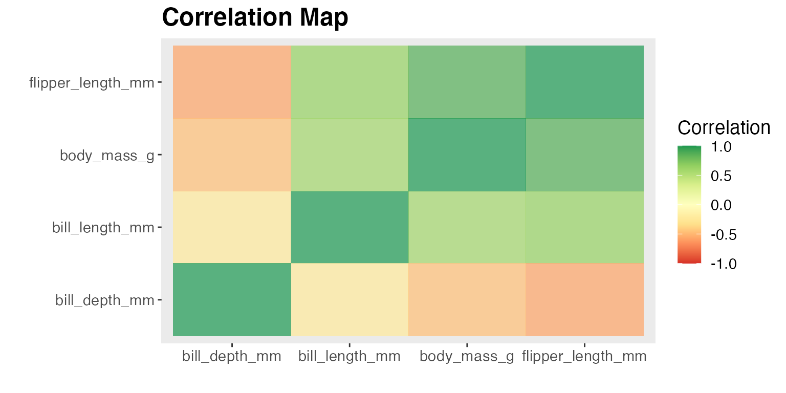

Exploratory Data analysis (EDA) is an important step in any data analysis. However, carrying out EDA with the ggplot2 package requires a lot of coding effort. Moreover, it assumes a basic knowledge of functions and grammar of graphics syntax that are appropriate for visualizing categorical and numerical variables. The RSimplerEDA package addresses this issue by providing functions that are tailored to produce categorical, numerical and correlation plots using a single line of code. Furthermore, the package provides customization capability for the plots based on specific user needs (theme, title, font, size and etc.). The users are able to spend more time on analyzing the data set and less time configuring ggplot plot settings.
The RSimplerEDA contains the following three functions:
corr_map: Plot a correlation map with the given dataframe object and a character vector with numerical features. Users are allowed to set multiple arguments regarding the setting of the correlation plot including method to calculate the correlation, color schemes, and plot title.
numerical_eda: This function takes in a data frame object, two numeric columns, and produces either a scatter or line plot to visualize the relationship between the two numerical features. Users can optionally change default arguments for plot-type, color, title, size of text, color-scheme, and toggle log transformation for the x and y axis.
categorical_eda: This function takes in a data frame object and one categorical feature, to produce a histogram plot that visualizes the distribution of the feature. Users can also choose to plot the density graph of the feature by specifying in plot_type. The function also offers customization on color, plot title, font size, color-scheme, plot size, opacity level, and facet factor.
This document will walk through an example problem to increase the understanding of the role of these functions to generate 3 types of exploratory data analysis plots.
You can download, build and install this package from GitHub with:
devtools::install_github("UBC-MDS/RSimplerEDA")
You can load the package with:
This example uses an open source dataset known as penguins from palmerpenguins package to demonstrate the application of our RSimplerEDA package. There is eight features in the penguins dataset: species, island, bill_length_mm, bill_depth_mm, flipper_length_mm, body_mass_g, sex and year. Penguins automatically loads as a tibble after being imported, but if your data is not a dataframe (e.g. matrix, csv, etc.), you will need to convert it to a data.frame or tibble before using the RSimplerEDA package.
library(palmerpenguins)
dim(penguins)
#> [1] 344 8
is.data.frame(penguins)
#> [1] TRUE
penguins
#> # A tibble: 344 x 8
#> species island bill_length_mm bill_depth_mm flipper_length_… body_mass_g
#> <fct> <fct> <dbl> <dbl> <int> <int>
#> 1 Adelie Torge… 39.1 18.7 181 3750
#> 2 Adelie Torge… 39.5 17.4 186 3800
#> 3 Adelie Torge… 40.3 18 195 3250
#> 4 Adelie Torge… NA NA NA NA
#> 5 Adelie Torge… 36.7 19.3 193 3450
#> 6 Adelie Torge… 39.3 20.6 190 3650
#> 7 Adelie Torge… 38.9 17.8 181 3625
#> 8 Adelie Torge… 39.2 19.6 195 4675
#> 9 Adelie Torge… 34.1 18.1 193 3475
#> 10 Adelie Torge… 42 20.2 190 4250
#> # … with 334 more rows, and 2 more variables: sex <fct>, year <int>There are 344 observations in the Penguins dataset with the features.
Questions that might arise when you want to explore the data:
Is there correlation among numerical variables in the dataset? (e.g between the species and body_mass_g or among all numerical variables)
Is there linear relationship between two numerical variables? (e.g. bill_length_mm and body_mass_g)
What is the distribution of body_mass_g in different island?
This package looks at answering the questions by providing common plots to explore and visualize the different features and their relationships.
If the data you use has missing values, you should handle it in the manner that fit your objective (e.g imputation or drop all of them). In the following example, we will drop all NAs in the penguins data so that our package will work properly.
penguins_drop_na <- penguins %>% tidyr::drop_na()corr_map)The function coor_map takes in dataframe and a character vector with numerical variables, and produce a correlation heatmap with the correlation coefficients of -1 to 1 among the given numerical variables. Users are allowed to set multiple arguments regarding the setting of the correlation plot, including method to calculate the correlation, color schemes and plot title.
Identifying correlation is important in the EDA process. It not only provides an overview to the relationship among numerical variables, it can help identify features that are correlated with the target if we want to conduct regression analysis.
In the example questions regarding correlation among numerical variables in the penguin dataset, there seems to be high positive correlation between flipper length and body mass
corr_map(penguins_drop_na, c("bill_length_mm", "bill_depth_mm", "flipper_length_mm", "body_mass_g"))
numerical_eda)This function takes in a data frame object, two numeric columns, and produces either a “scatter” or “line” plot to visualize the relationship between the two numerical features. Users can optionally change default arguments for plot-type, title, size of text, color-scheme, and toggle log transformation for the x and y axis. In the penguins example, we are interested to know whether higher body_mass_g is associated to longer bill_length_mm for different species. Hence we will use numerical_eda to plot this association.
numerical_eda(penguins, body_mass_g, bill_length_mm, color = species, title = "Body mass (grams) vs Bill Length (mm)")Optionally we can also look at the relationship of body_mass_g and bill_length_mm based on the sex of penguins.
numerical_eda(penguins, body_mass_g, bill_length_mm, color = sex, title = "Body mass (grams) vs Bill Length (mm)")body_mass_g in different island (categorical_eda)categorical_eda takes in data frame as input data, a categorical feature as color, and a numerical or categorical feature as value on x-axis, to produce a histogram plot that visualize the distribution of the numerical feature on each categorical variable. With penguins data frame as an example, categorical_eda plots three faceted histogram that shows the distribution of body_mass_g of penguins from different island.
categorical_eda(penguins,
xval = body_mass_g,
plot_type = "histogram",
color=island,
facet_factor = "island",
facet_col = 1,
title="Distribution of Body Mass of Penguins from Each Island",
font_size = 8)In addition to “histogram”, categorical_eda also has the option to plot density graph by changing plot_type to density and adding an opacity value.
categorical_eda(penguins,
xval = body_mass_g,
plot_type = "density",
color=island,
opacity = 0.6,
title="Density Graph of Body Mass of Penguins from Each Island",
font_size=8)